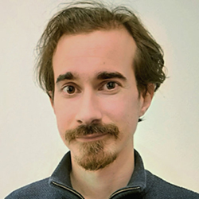
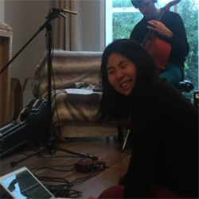
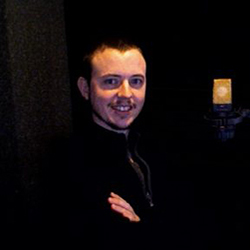

This is the homepage of the Ireland Section of the Audio Engineering Society, an international organisation dedicated to audio engineering. For more than sixty years, the Society has provided the industry with a framework and forum for the advancement of the science and art of audio.The Ireland Section is run voluntarily by the committee, The Ireland section is one of has the largest AES section outside the United States, with over nine hundred members.
- The Human Tuning Fork and AES Ireland AGM
- 29TH FEBRUARY 2020

- Meeting Topic: 'The Human Tuning Fork' and AES Ireland AGM
- Moderator Name: Enda Bates
- Speaker Name: Fiona Smyth (Trinity College Dublin)
- Other business or activities at the meeting: • Election of Officers
- • Website and social media
- • Treasurer's report
- • Meeting planning
- Meeting Location: Seminar Room 1, Parsons Building, Trinity College Dublin
- Summary
- Dr. Fiona Smyth gave a talk on the first independent acoustic consultant in Britain or Ireland, Dublin-born architect Hope Bagenal (1888-1979). She described his life and work including Abbey Road studios, St. Paul's Cathedral, the Assembly Chamber at Imperial Delhi, and Dublin's Carleton Cinema. Hope Bagenal's life story connects the disciplines of science, music, and architecture. Interestingly, music was part of his method of analysis and informally, he became known as 'The Human Tuning Fork'.
- Object-based Audio & Spatial Audio
- 20TH NOVEMBER 2019
- Meeting Topic: Object-based Audio & Spatial Audio/li>
- Moderator Name: Enda Bates
- Speaker Name: Alex Wilson (University of Huddersfield), Hugh O'Dwyer (Trinity College Dublin)
- Other business or activities at the meeting: Web presence, Treasurer report, Event Planning, Sponsorship, Diversity
- Meeting Location: Trinity College Dublin, Dublin, Ireland
- • Treasurer's report
- • Meeting planning
- Meeting Location: Seminar Room 1, Parsons Building, Trinity College Dublin
- Summary
- Alex Wilson began the meeting with a lecture entitled "Listener-centric design of audio systems: adapting playback to users' needs and preferences". Alex first introduced concepts related to object-based audio delivery along with potential benefits to the user, and challenges to the system designers. The design and evaluation of an interactive audio renderer was then discussed. He explained that the system explored in the lecture was designed to allow the creation of personalised audio mixes based on feedback from the user. Applications for this proof-of-concept were then discussed.
- Hugh O'Dwyer's lecture, entitled "Novel Methods for the Analysis and Assessment of Spatial Audio", focused on three primary topics. He first described a comparative study evaluating the perceived quality of Ambisonic microphones assessed using subjective listening tests of recordings and a directional encoding analysis of the B-format signals. He then discussed two virtual headphone testing methodologies demonstrating the validity of presenting headphone recordings, and stimuli filtered using headphone transfer functions, to assess the quality of headphones. Lastly, he explained how deep neural networks can be used to model sound source localization (elevation and distance) in binaural signals.
About The Audio Engineering Society
We are the Ireland Chapter of the Audio Engineering Society, an international organisation dedicated to audio engineering. For more than sixty years, the Society has provided the industry with a framework and forum for the advancement of the science and art of audio.

What we do
The AES is principally a learned society, publishing research, encouraging co-operation on best practice throughout the industry, and disseminating technical information through:
- •The monthly AES Journal;
- •Bi-annual conventions;
- •Standards documentation;
- •Anthologies of pre-eminent AES papers in many categories.;
- •Technical monographs and other publications.
AES standards committees, technical committees, and working groups provide international opportunities for the discussion and resolution of technical issues. These include the standardisation of testing methods, interconnection standards, preservation of historic recordings, and protocols for sound system control.
The Ireland Section
Run voluntarily by the committee, the Ireland Chapter was founded in 2018 and has over 20 members. Activities run specifically by the Section include:
•Free regular lecture meetings throughout the country (non-members are welcome);
There is more information about the Ireland Section committee and our volunteers on their own pages.
AES Ireland Section Committee
The AES Ireland Section committee work on a purely voluntary basis to run the events, activities and campaigns of the section. They work in a wide range of audio related commercial businesses and academia.

Joe Timoney ‐ Chair
Dr Joe Timoney completed his PhD in Electronic Engineering at TCD, Ireland in 1998. He joined the Dept. of Computer Science at Maynooth University in the following year. He teaches on undergraduate programs in Computer Science and in Music Technology. His research interests are based in the area of audio signal processing, with a focus on musical sound synthesis and the digital modelling of analogue subtractive synthesizers. He is also a DIY electronics enthusiast and has participated in a number of national Maker Fairs as part of the Maynooth University club. He has a member of the Audio Engineering Society for over 10 years.Rokaia Jedir ‐ vice Chair
Rokaia Jedir is a postgraduate researcher at the Interactive Systems Research Group (ISRG), Limerick Institute of Technology. In 2018 she graduated with a first-class honours BSc degree in Music Technology & Production, and is currently pursuing a MSc degree with intentions to transfer to PhD in 2020. Her primary research interests include psychoacoustics, working memory, and human‐computer interaction in general. Currently, her research is dedicated to developing a computational model of human working memory (WM) as applied to the auditory perceptual system, aimed at contributing to the development of next-generation multimodal interface design. She is a committee member of TC 02/SC 03/WG 01, a NSAI mirror committee of the international standards working group ISO/IEC JTC 1/SC 29/WG 11.
Alex Wilson ‐ Secretary Position
Alex Wilson is currently a postdoctoral research fellow in the Acoustics Research Centre at the University of Salford, investigating the perception of object‐based audio technologies while teaching digital signal processing. He received a PhD from the same institution in 2017, which covered the areas of audio quality, popular music, accessibility and automated mixing, and has produced three papers for the Journal of the AES. He was the co‐chair and organiser of the 3rd Workshop on Intelligent Music Production and has contributed to conferences and workshops organised by the UK section of the AES. A native of Dublin, in a past life, he studied experimental physics at Maynooth University while recording excessive amounts of music in a bedroom studio.
Malachy Ronan ‐ Committe Member
Dr. Malachy Ronan is an Assistant Lecturer at the Limerick Institute of Technology. He holds MSc in Music Technology and PhD in Perception and Audio Engineering degrees from the University of Limerick. A member of the AES since 2014, he has disseminated research at various AES outlets and is co-chair for student volunteers at AES 146. Current research interests include perception and signal processing.

Ronan O'Dea ‐ Committee Member
Ronan O'Dea is a post‐graduate researcher at the Limerick Institute of Technology. He holds a BSc in Music Technology and Production awarded by the Limerick Institute of Technology. He is an active member of the Interactive Systems Research Group (ISRG) with an interest in psychoacoustics and human-computer interaction. He is currently pursuing a PhD with aim to evaluate the perception of reverberant auditory cues embedded within multimodal interfaces. He is a committe member of TC 02/SC 03/WG 01, a NSAI mirror committee of the international standards working group ISO/IEC JTC 1/SC 29/WG 11.

Joe Fitzpatrick ‐ Committee Member
Joe Fitzpatrick is currently a postgraduate researcher and a member of the Interactive Systems Research Group in Limerick Institute of Technology. He is currently concluding a PhD exploring how the principles of human auditory perception and Auditory Scene Analysis can be used in the design stages of sonification. Beyond this, he has worked with various small to medium enterprises as an audio consultant which has involved prototyping listening devices, extracting data from audio, and facilitating both qualitative and quantitative user‐studies.
Pheobe Sun ‐ Committee Member
Pheobe Sun is a PhD candidate in audio and speech quality of experience at the QxLab research group in the School of Computer Science at University College Dublin, with an emphasis on the cognitive‐perceptual experience. She obtained her primary degree and master's degree from Trinity College Dublin. She is also an interactive installation artist and a social experiment designer. Her previous research piece was carried out at the exhibition 'Intimacy' in Science Gallery Dublin.
Flaithri Neff ‐ Committe Member
Dr Flaithri Neff is a lecturer in Audio DSP and Acoustics at the Limerick Institute of Technology. He holds a MSc in Music Technology (University of Limerick) and a PhD in Computer Science (University College Cork). He established the Interactive Systems Research Group (ISRG) to bring together LIT researchers who are interested in modelling the auditory perceptual system with the aim of developing sonification applications for multimodal interfaces. Having an interest in audio standards, he is also MPEG Convenor of TC 02/SC 03/WG 01, a NSAI mirror committee of ISO/IEC JTC 1/SC 29/WG 11.He is a musician and composer, and has performed internationally with Riverdance, the Afro Celt Sound System, the Royal Scottish National Symphony Orchestra, and for various film projects.

Eli Farnhill‐ Committee Member
Hello, I'm Eli Farnhill I'm a postgraduate researcher at Limerick Institute of Technology looking into Technology Enhanced Learning in Music Technology degrees I'm a graduate of the Music Technology & Production degree at Limerick Institute of Technology I've been playing music since I found a clarinet at age 5, and I've been messing around with audio since I found I could record onto my parents' tape deck I released my first commercial EP in 2019 titled "The Advance" which contains a mix of genres and sound manipulation techniques, ranging from digital effects to analogue looping systems Since graduating I've been working as a freelance mixing engineer in the local music scene

Patrick mark ‐ Committee Member
Patrick Mark Duffy is a composer and postgraduate researcher at The Centre for Creative Informatics, ACADEmy Research Institute in Limerick Institute of Technology, Ireland
Andrew Hines ‐ Committee Member
Dr Hines is an assistant professor in the School of Computer Science at University College Dublin. His primary research interests are in speech, audio and video signal processing. He has active research collaborations applying machine learning models to health applications and cryptosystems. He has developed computational metrics for estimating speech and audio quality as well as for predicting speech intelligibility for people with hearing impairments. Recent work has looked at predicting quality and location accuracy for spatial audio. Dr Hines is a funded investigator in both the SFI CONNECT research centre for future networks and INSIGHT research centre for data analytics. He has represented Ireland on the management committee of Qualinet, an FP7 European COST Action, where he led a task force focused on using machine learning to develop Quality of Experience (QoE) models. He is a senior member of the IEEE, member of the AES. He is facilities chair for the AES146 convention in Dublin in 2019, publicity chair for ACM MMVE 2019 and general chair for IEEE QoMEX 2020
Brian Hunt ‐ Committee Member
Studied Telecommunications in Kevin Street 1974‐1978. Joined BBC TV London in 1978 working in Special Projects, Studio Engineering. Work included delivering programme focussed communications facilities for General Elections, Budget programmes, Children in Need, Royal Wedding, Olympic Games and other major sporting events. In 1989, joined the BBC TV's capital projects department called P&ID Tel. Work involved planning and designing replacement studio infrastructure. Responsible for designing the replacement DTMF signalling system that replaced the old 17 Hz control line system throughout the BBC. This required the new equipment to be BABT tested prior to use. In 1992, became the regional manager in Sligo and the NW for a company involved with digital TV EU projects, MMDS and cable TV. In 1995, set up AVA Systems to offer broadcast, audio visual engineering services and acoustic consultancy and design.
Kelvin Garland ‐ Committee Member
Postgraduate Researcher at The Centre for Creative Informatics, Limerick Institute of Technology, Ireland. Research topics include human-computer interaction, user-centered design, and audio technology.AES Ireland Section Volunteers
The Irish Chapter of the Audio Engineering Society is totally run by volunteers. Alongside the committee and the regional group chairs we rely on a wide team of amazing volunteers to run our events and activities.
Michael Oyetunde
Michael Oyetunde is a fourth year Computer Science and Software Engineering student who volunteered to help assist with the current AES Ireland website.
Brian Hunt
Studied Telecommunications in Kevin Street 1974‐1978. Joined BBC TV London in 1978 working in Special Projects, Studio Engineering. Work included delivering programme focussed communications facilities for General Elections, Budget programmes, Children in Need, Royal Wedding, Olympic Games and other major sporting events. In 1989, joined the BBC TV's capital projects department called P&ID Tel. Work involved planning and designing replacement studio infrastructure. Responsible for designing the replacement DTMF signalling system that replaced the old 17 Hz control line system throughout the BBC. This required the new equipment to be BABT tested prior to use. In 1992, became the regional manager in Sligo and the NW for a company involved with digital TV EU projects, MMDS and cable TV. In 1995, set up AVA Systems to offer broadcast, audio visual engineering services and acoustic consultancy and design.
Past Committee Members
We are indebted to our past committee members for providing guidance, leadership and direction for the AES Ireland Section over the years.

Enda Bates ‐ Treasurer
Dr Enda Bates is a composer, musician, producer and academic based in Dublin, Ireland, and an Assistant Professor and deputy director of the Music and Media Technologies programme in Trinity College Dublin. He obtained a B. Eng. in Electronic Engineering from Dublin City University in 2000, an M. Phil. In Music & Media Technologies from Trinity College Dublin in 2004, and in 2010 he completed a PhD at Trinity College Dublin entitled The Composition & Performance of Spatial Music. Current research interests include spatial audio, psychoacoustics, the aesthetics of electroacoustic music, and the augmented electric guitar. He is an active composer and performer, and a founder member of the Spatial Music Collective, and is currently on the organizing committee for the 146th AES Convention to be held in Dublin in March 2019.
Past event infomation.
A Member may be anyone active in audio engineering or acoustics who has an academic degree or the equivalent in scientific or professional experience in audio engineering and its allied arts and is familiar with the application of engineering principles and data in that field.
An Associate Member may be anyone who has an interest in audio engineering and in the society objectives, but who does not yet have the degree or the equivalent in professional experience required of a Member. Associate membership includes all the privileges except voting, holding office or chairmanships.
A Student Member may be anyone interested in audio who is enrolled in a recognized school, college or university. As with Associate Members, Student Members may not vote or serve on committees except in a local chapter.
Membership Benefits and Features of the AES
•Meet and talk with other members of the audio industry
•Receive the Journal of the AES and electronic news regularly
•Learn directly from recognized experts in the audio field
•Find out the most up-to-date products in the market
•Have access to the latest developments by researchers
•Participate in local section meetings, workshops, and discussion forums
•Receive discounts on events and publications
•For students: the AES is the perfect complement to your education
•Workshops
•Tutorials
•Masterclasses
•Student recording and design competitions
•Papers
•Exhibitor seminars
•Over 14,000 members worldwide
•77 professional sections worldwide
•99 student sections worldwide
•Annual North American convention
•Annual European convention
•Regional conventions and conferences
Sustaining Members
To maintain and improve the structure of the AES, the AES is supported financially by Sustaining Members throughout the world.
To maintain and improve the structure of the AES, the AES is supported financially by Sustaining Members throughout the world. The UK Section is supported by a cross-section of UK based companies whose contributions are vital in ensuring that the UK Section continues its role within the AES.
Sustaining Membership is available to organizations in communications, manufacturing, research and allied areas of the audio and acoustic fields. Sustaining Members help support the society through contributions and receive recognition in the Journal of the Audio Engineering Society (JAES), at all AES technical meetings and at aes.org.
Benefits available to Sustaining Members
•Free AES Journal 10 times a year
•Monthly listing in the AES Journal
•Links from the AES UK and International AES websites
•Company profile and listing on the International AES website
•Company profile annually in the AES Journal
•10% off all advertisements in the AES Journal
•AES convention registration fees at member rates for all employees of Sustaining Member companies
•Free roving passes for Sustaining Members exhibiting at AES conventions
•Sustaining Member exhibitors highlighted in AES exhibition guides
•Free copies of UK conference proceedings
•Free recruitment and equipment advertising in UK Section Newsletter
•Free recruitment advertising on InternationalAES website
Click here for further information about how to become a Sustaining Member.


Students
Our student community is vibrant and active. We recognise that students are the future of our industry and we support a range of student sections, events and educational activities.

Student Membership
Being a Student Member of the Audio Engineering Society has never been more important, as technology whips forward and many segments of our industry literally reinvent themselves. A successful career in audio must be built on future-proof knowledge and skills, supported by a community of professionals who share your passion for audio and commitment to the highest audio quality. Audio Engineering Society Student Members receive a number of freebies and exclusive deals from world renowned audio companies. Join the AES today, connect to the greatest professional and educational audio network and make use of the exciting benefits offered by our partners! For details of student member benefits please go here. To join the AES as a student member use the 'Join AES Today' link above.
Student Delegate Assembly
The Student Delegate Assembly (SDA) is led by four AES student members, elected by their peers to represent over 4000 AES student members around the world. There are two regions, North/Latin America, and Europe/International, and each region is represented by a chair and vice chair. Elections take place at the SDA-2 meeting at the American and European conventions, and the Chair of the AES Education Committee oversees and advises on the activities of the SDA.
Jobs And Careers
The AES Jobs page has a wide range of exciting opportunities.
Dundalk Institute Of Technology

DkIT is the focal point for higher education and research on the Belfast-Dublin corridor, serving the North Leinster, South Ulster region. Students and graduates are an important asset to this region and success is vital to its continued economic, social and cultural growth.
Limerick Institute Of Technology

Limerick Institute of Technology is home to over 6,500 students across vibrant campuses in Limerick city, Thurles, Clonmel and Ennis, offering lively and enjoyable student experiences. We are also currently developing a new state of the art engineering focussed campus at Coonagh in Limerick.
Maynooth University

Maynooth University is a thriving research enterprise, a vibrant and exciting place to learn, and importantly, is a university that places equal value on research and teaching.Maynooth engaged university with extensive research and teaching partnerships with enterprise, public bodies, civil society and community organisations.
Trinity College Dublin

Trinity College Dublin, the University of Dublin they provide a liberal environment where independence of thought is highly valued and all are encouraged to achieve their potential. Promoting a diverse, interdisciplinary, inclusive environment which nurtures ground-breaking research, innovation, and creativity through engaging with issues of global significance.
University College Dublin

UCD is one of Europe's leading research-intensive universities; an environment where undergraduate education, masters and PhD training, research, innovation and community engagement form a dynamic spectrum of activity
For further information feel free to send us an email: aes.irelandsection@gmail.com